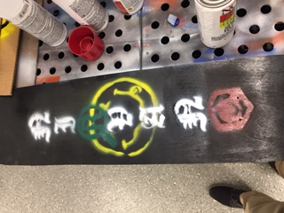

This week we finished up the skateboards and casted food grade silicone molds out of the wax models we made. We were also introduced to the process of creating a circuit and welding the circuits.
After me mixed and vacuum-degassed the concoction of silicone, we had to pour the mixture in thin, fine streams in order to burst the air bubbles still remaining in the silicone. The final results look like this.
The second day we took the mold out and poured melted chocolate into the silicone mold. I inserted a sucker stick into the bear chocolate, since it is made for potential commercial sales and would be better off if kids could hold and look at them without melting it. After twenty some minutes in the refrigerator, the bear was done and delicious! However, "ILJR" wasn't that lucky in camparison. The mold stuck to the door and the chocolate was damaged in an effort to secure the mold.
At the same time of pouring molds, I was finishing up my skateboard. The tempura paint last week was too different from the color of the black spray paint so I had to repaint the region black and spray paint the letters back on. The process was extremely hazardous, but I managed to somehow improve it to the following look.

The following day I did the urethane coating on the skateboard. I painted both sides of my board and Garett's, but forgot to put them away from the paper on some rack. The paper ended up sticking to the board so tight that we had to scrape it off. The urethane coating should probably be done one side at a time.
Finally, we were introduced to bare conductive and chibitronics at the end of the week. Next week we would need to make a circuit and couple it with some other process to produce something aesthetically pleasing. An idea would be the Whac-A-Mole game machine.